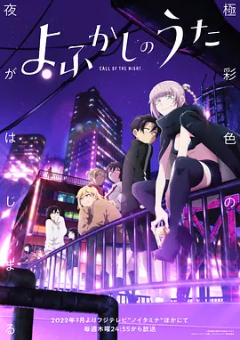

8.4
彻夜之歌
Call of the Night
2022
日本
评分 8.4
导演:
板村智幸 / 武藤信宏 / 大西景介 / 关野圭一 / 高藤聪
演员:
雨宫天 / 佐藤元 / 花守由美里 / 户松遥 / 喜多村英梨
类型:
剧情,奇幻,爱情
剧情简介
夜守光原本是个讨厌女生、安于学校生活的初中二年级学生。某天，他第一次在深夜没有告诉任何人便从家里悄然溜出，看见夜晚霓虹下的世界别有一番自由感，他突然明白，自己似乎被夜晚召唤。正是在那时，他遇见了神秘的美少女七草荠，她自称是夜晚的居民──一个吸血鬼。荠用轻声细语邀请光：“熬到今天满意为止吧，少年。”在夜色中，她带着他走过城市的街道、夜店、泳池，和他分享只有在凌晨才能触及的寂静与悸动。光对荠产生浓厚兴趣，他突然许下心愿：“请把我变成吸血鬼。”荠淡然回应：成为吸血鬼的条件，是“人类爱上吸血鬼”。随后，两人开启了一个特殊的“夜间约会”——在夜色漫延、蝙蝠掠过楼顶的氛围里，光既期待又紧张，荠则以半玩笑半认真地陪伴他探索夜晚的深处。她教他喝啤酒、看夜景、潜入泳池，人类少年在夜幕下缓慢地觉醒：原来自己对白天的生活的不满，是对夜晚这片自由空间的渴望。与此同时，夜晚并非没有规则。吸血鬼世界也有边界，荠不仅游走于人类与吸血鬼之间，也在感情与责任之间摇摆。光在陪伴中观察、猜测、成长，他从没谈过恋爱，却渐渐在夜的漫游中，明白什么是渴望、什么是归属、什么是爱。夜守与七草，两个本该隔绝的存在，在城市灯光与暗影交织下，找到了共同呼吸的节拍。夜晚的街头上，他们像两个漂泊的灵魂，彼此牵引，却又各自挣扎。